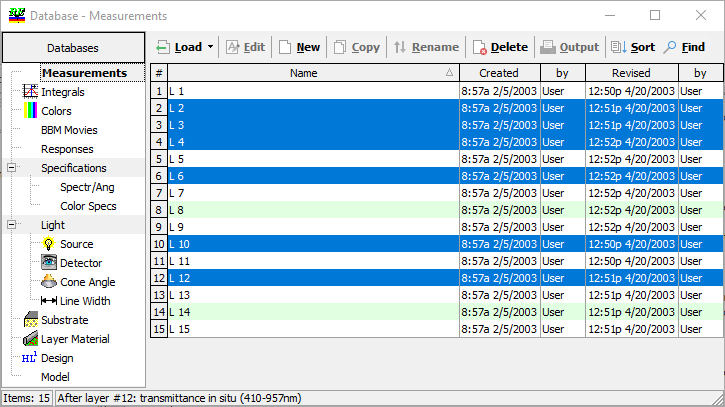
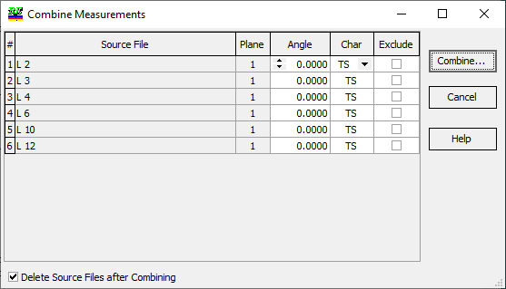

Combine Measurements
With the Combine Measurement dialog, it is possible to merge measurement data stored in different files into a single resulting file for simultaneous data processing.
To combine files, you first need to select these files in the Measurement Database:

Use common Windows commands to select multiple files:
Ctrl + Shift + Arrow Keys to extend the selection.
Shift + Left Click to select multiple files.
Ctrl + Left Click to select/deselect a file in multi-select mode.
Then, right-click any of the selected files and use the Combine… command (the selection will remain).

In this window, you will find a list of source files, angular planes, and characteristics. You have the option to exclude unnecessary characteristics and adjust the angles of incidence and characteristic types.
The Delete Source Files after Combining option enables a quick and easy cleanup operation.